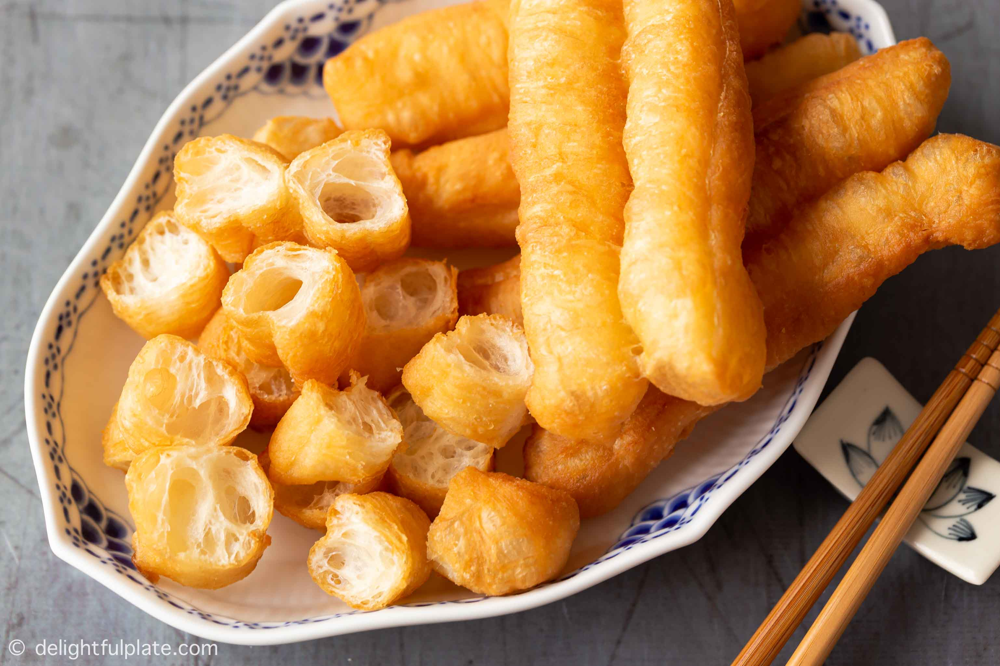

Vietnamese quẩy is a deep-fried snack which was inspired by youtiao, a popular Chinese delicacy. Although very similar in preparation and shape to its more popular cousin, quẩy is regarded as a national culinary treasure in Vietnam. Plain flour, leavening agents, salt, water, and sugar create the basic dough, which is left to rest for hours until ready. The snack is created by combining two pieces of dough which are shortly deep-fried until golden brown. The lengthy preparation procedure should result in a delicacy which puffs in contact with oil and slightly separates to resemble two individual sticks that are connected in the middle.
Meal prep time : 5 hours 50 minutes
Servings : 12